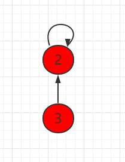
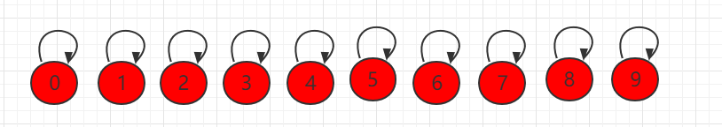
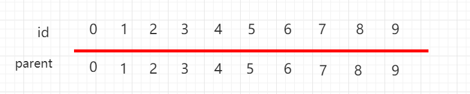
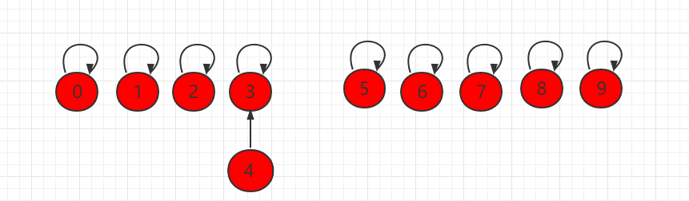
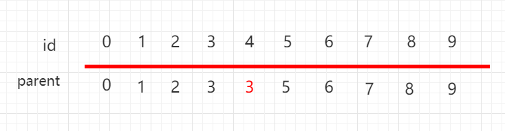

Union-Find Quick Union
For a set of data, the Union-Find data structure mainly supports two operations:
-
union(p,q) - Connect the two elements p and q together.
-
find(p)- Query which set the element p belongs to.
-
isConnected(p,q)- Check whether the two elements p and q are connected.
In the previous subsection, we usedidRepresenting the Union-Find set in array form, the time complexity of the find operation in actual use isO(1), but the connection efficiency was not high.
In this subsection, we will implement the Union-Find set in another way. Treat each element as a node that points to its parent node, and the root node points to itself. As shown in the figure below, node 3 points to node 2, meaning 3 and 2 are connected; node 2 itself is the root node, so it points to itself.

We also use an array to represent the Union-Find set, but the following group of elements usesparentto represent the parent node that the current element points to. Each element points to itself, and all are independent.


If operating at this timeunion(4,3), point element 4 to element 3:

The array also changes accordingly:

To determine whether two elements are connected, you only need to check whether their root nodes are the same.
As shown in the figure below, the root nodes of node 4 and node 9 are both 8, so they are connected.

To connect two elements, you only need to find their corresponding root nodes and connect the root nodes; then they become connected nodes.
Suppose we want to connect 6 and 4 in the above figure; we only need to point the root node 5 of 6 to the root node 8 of 4.

To build such a tree structure pointing to parent nodes, use an array to build a tree pointing to parent nodes; parent[i] represents the parent node pointed to by element i.
private int[] parent;
private int count; // number of data elements
...
Find process: to find the set number corresponding to element p, continuously query its parent node until reaching the root node. The root node is characterized by parent[p] == p, with O(h) complexity, where h is the height of the tree.
private int find(int p){
assert( p >= 0 && p < count );
while( p != parent[p] )
p = parent[p];
return p;
}
...
To merge the sets to which element p and element q belong, find the root nodes of the two elements respectively, and make one root node point to the other root node; then the two sets are merged. This operation has O(h) time complexity, where h is the height of the tree.
int pRoot = find(p);
int qRoot = find(q);
if( pRoot == qRoot )
return;
parent[pRoot] = qRoot;
}
Java example code
Source code package download:Download
UnionFind2.java file code:
/**
* Second version of UnionFind
*/
public class UnionFind2 {
// Our second version of Union-Find uses an array to build a tree pointing to parent nodes
// parent[i] represents the parent node of the i-th element
private int[] parent;
private int count; // number of data elements
// constructor
public UnionFind2(int count){
parent = new int[count];
this.count = count;
// initialize, each parent[i] points to itself, indicating that each element forms a set by itself
for( int i = 0 ; i < count ; i ++ )
parent[i] = i;
}
// find process, find the set number corresponding to element p
// O(h) complexity, h is the height of the tree
private int find(int p){
assert( p >= 0 && p < count );
// keep querying the parent node until reaching the root node
// characteristic of root node: parent[p] == p
while( p != parent[p] )
p = parent[p];
return p;
}
// check whether element p and element q belong to the same set
// O(h) complexity, h is the height of the tree
public boolean isConnected( int p , int q ){
return find(p) == find(q);
}
// merge the sets containing element p and element q
// O(h) complexity, h is the height of the tree
public void unionElements(int p, int q){
int pRoot = find(p);
int qRoot = find(q);
if( pRoot == qRoot )
return;
parent[pRoot] = qRoot;
}
}